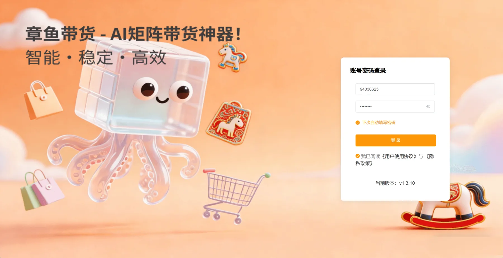
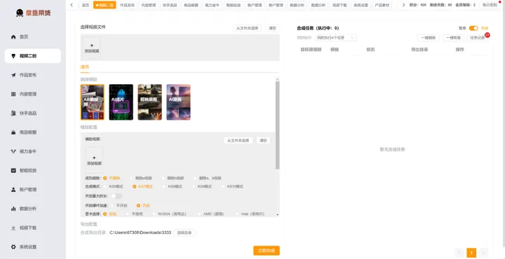
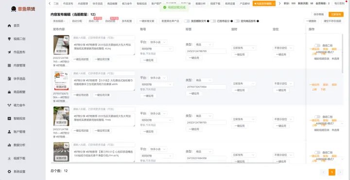
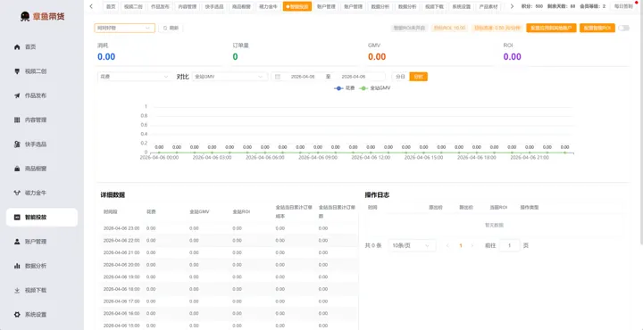

当前版本：Windows x64 v1.3.10
支持 Windows 10 / Windows 11，推荐 Chrome 129-136。账号申请与安装包获取请联系微信 aff22g。
把账户管理、快手选品、素材下载、视频二创、批量发布、内容管理、磁力金牛投放和数据复盘整合到一套工作台里，减少多网页、多工具之间的反复切换。

这里只放章鱼带货软件本身的版本变化、功能调整、安装包说明和运行环境要求。站点维护、收录提交、接口部署这类后台动作不会写到这里。
支持 Windows 10 / Windows 11，推荐 Chrome 129-136。账号申请与安装包获取请联系微信 aff22g。
当前资料版本覆盖账号管理、快手选品、素材下载、视频二创、作品发布、内容管理、投放和数据分析等流程。
选什么品、素材从哪里来、视频怎么批量二创、账号怎么分组发布、投放怎么看 ROI、爆款怎么复盘，任何一个环节卡住，都会拖慢整个矩阵。
榜单、佣金、商品信息和可推广素材分散在不同页面，团队容易靠经验和手抄表推进。
批量下载、AB 视频、AI 成片、AI 混剪、剪映模板都需要标准化，否则账号越多越难稳定产出。
多账号发布、定时发布、失败重试、草稿复用，如果靠人工逐条操作，很难形成固定节奏。
磁力金牛数据、计划状态、日预算、ROI 和成交表现需要集中查看，才能更快调整策略。
软件按运营顺序组织功能，让团队可以从账户、商品、素材、内容、发布、投放和数据复盘一路推进。
集中绑定抖音、视频号、快手、快手小店等账号，支持标签分组和批量导入。
围绕快手带货查看商品、榜单和爆款推荐，缩短找品与决策时间。
通过视频下载、产品素材库和保存目录统一管理素材，减少文件混乱。
支持 AB 视频、AI 成片、AI 混剪、剪映模板等二创方式，适合矩阵批量生产。
批量发布、内容管理、智能投放和数据分析共同形成发布与复盘闭环。

从文件夹添加素材，选择 AB 视频、AI 成片、AI 混剪或剪映模板，统一查看合成任务进度。

支持多账号、多任务、草稿复用、定时发布、封面和话题配置，让发稿流程更可控。

集中查看花费、成交额、订单量和投入产出比，并把投放策略批量应用到多个账户。
建议使用 Windows 10 或 Windows 11。安装后在系统设置里配置 Chrome 路径、缓存、代理和 AI 相关参数，再进入账户管理绑定账号。